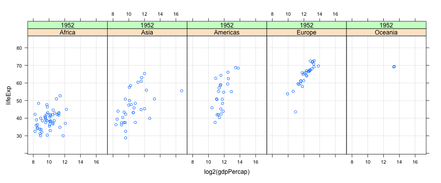

class: center, middle # Introduction to Data Visualization ## Data Analysis with R and Python ### Deepayan Sarkar <h1 onclick='document.documentElement.requestFullscreen();' style='cursor: pointer;'> <svg xmlns='http://www.w3.org/2000/svg' width='16' height='16' fill='currentColor' class='bi bi-arrows-fullscreen' viewBox='0 0 16 16'> <path fill-rule='evenodd' d='M5.828 10.172a.5.5 0 0 0-.707 0l-4.096 4.096V11.5a.5.5 0 0 0-1 0v3.975a.5.5 0 0 0 .5.5H4.5a.5.5 0 0 0 0-1H1.732l4.096-4.096a.5.5 0 0 0 0-.707zm4.344 0a.5.5 0 0 1 .707 0l4.096 4.096V11.5a.5.5 0 1 1 1 0v3.975a.5.5 0 0 1-.5.5H11.5a.5.5 0 0 1 0-1h2.768l-4.096-4.096a.5.5 0 0 1 0-.707zm0-4.344a.5.5 0 0 0 .707 0l4.096-4.096V4.5a.5.5 0 1 0 1 0V.525a.5.5 0 0 0-.5-.5H11.5a.5.5 0 0 0 0 1h2.768l-4.096 4.096a.5.5 0 0 0 0 .707zm-4.344 0a.5.5 0 0 1-.707 0L1.025 1.732V4.5a.5.5 0 0 1-1 0V.525a.5.5 0 0 1 .5-.5H4.5a.5.5 0 0 1 0 1H1.732l4.096 4.096a.5.5 0 0 1 0 .707z'/> </svg> </h1> --- layout: true # Data Visualization --- * Important component of data analysis -- * Main purposes - Exploration - Presentation -- * Learning objectives - What kind of visualization to use - How to create them <div> $$ \newcommand{\sub}{_} $$ </div> --- layout: false # Example datasets: `airquality` (size: small) ```r str(airquality) # built-in dataset ``` ``` 'data.frame': 153 obs. of 6 variables: $ Ozone : int 41 36 12 18 NA 28 23 19 8 NA ... $ Solar.R: int 190 118 149 313 NA NA 299 99 19 194 ... $ Wind : num 7.4 8 12.6 11.5 14.3 14.9 8.6 13.8 20.1 8.6 ... $ Temp : int 67 72 74 62 56 66 65 59 61 69 ... $ Month : int 5 5 5 5 5 5 5 5 5 5 ... $ Day : int 1 2 3 4 5 6 7 8 9 10 ... ``` ??? We will use three example datasets for illustration. These are of varying sizes, so that we get a sense of the special issues that can arise with large datasets. In real life, a lot of time is usually spent on collecting, combining, and summarizing the data before they are ready for analysis. That aspect is important, but we will not go into it right now. Instead, we will assume that data has already been suitably processed, and is available to us in a simple spreadsheet or data frame format. The first dataset we will consider is a simple built-in dataset in R, - giving daily air quality measurements in New York City, - over five months in 1973. It has 153 observations, one for each day from May through September. --- # Example datasets: `airquality` (size: small) ```r head(airquality, 15) ``` ``` Ozone Solar.R Wind Temp Month Day 1 41 190 7.4 67 5 1 2 36 118 8.0 72 5 2 3 12 149 12.6 74 5 3 4 18 313 11.5 62 5 4 5 NA NA 14.3 56 5 5 6 28 NA 14.9 66 5 6 7 23 299 8.6 65 5 7 8 19 99 13.8 59 5 8 9 8 19 20.1 61 5 9 10 NA 194 8.6 69 5 10 11 7 NA 6.9 74 5 11 12 16 256 9.7 69 5 12 13 11 290 9.2 66 5 13 14 14 274 10.9 68 5 14 15 18 65 13.2 58 5 15 ``` ??? Here, the HEAD function shows the first 15 rows of the dataset. Notice that there are some NA values, which indicate missing data. Also notice that dates are specified separately in MONTH and DAY columns, and MONTH is indicated by number rather than name. --- # Example datasets: `gapminder` (size: moderate) ```r gapminder <- read.table("data/gapminder.tsv", sep = "\t", header = TRUE) str(gapminder) ``` ``` 'data.frame': 1698 obs. of 6 variables: $ country : chr "Afghanistan" "Afghanistan" "Afghanistan" "Afghanistan" ... $ continent: chr "Asia" "Asia" "Asia" "Asia" ... $ year : int 1952 1957 1962 1967 1972 1977 1982 1987 1992 1997 ... $ lifeExp : num 28.8 30.3 32 34 36.1 ... $ pop : int 8425333 9240934 10267083 11537966 13079460 14880372 12881816 13867957 16317921 22227415 ... $ gdpPercap: num 779 821 853 836 740 ... ``` ??? The second dataset is the GAPMINDER data we have seen earlier. It has 1698 observations, much larger than the previous dataset. --- # Example datasets: `gapminder` (size: moderate) ```r subset(gapminder, country == "Australia") ``` ``` country continent year lifeExp pop gdpPercap 61 Australia Oceania 1952 69.120 8691212 10039.60 62 Australia Oceania 1957 70.330 9712569 10949.65 63 Australia Oceania 1962 70.930 10794968 12217.23 64 Australia Oceania 1967 71.100 11872264 14526.12 65 Australia Oceania 1972 71.930 13177000 16788.63 66 Australia Oceania 1977 73.490 14074100 18334.20 67 Australia Oceania 1982 74.740 15184200 19477.01 68 Australia Oceania 1987 76.320 16257249 21888.89 69 Australia Oceania 1992 77.560 17481977 23424.77 70 Australia Oceania 1997 78.830 18565243 26997.94 71 Australia Oceania 2002 80.370 19546792 30687.75 72 Australia Oceania 2007 81.235 20434176 34435.37 ``` ??? But this large size is mainly due to the fact that the dataset contains records for many countries. If we restrict our attention to the subset for Australia, for example, we see that there are only 12 observations. We will talk about the SUBSET function in more detail later on. <!-- --- --> <!-- # Example datasets: `measles` (size: moderate) --> <!-- r --> <!-- measles <- read.csv("data/measles.csv") --> <!-- str(measles) # 'rate' is number of measles cases per 100,000 people --> <!-- --> <!-- ??? --> <!-- Another dataset we will use is the measles data that records the --> <!-- - rate of measles incidences, --> <!-- - per 100,000 people, --> <!-- - in various US states from 1928 to 2003. --> <!-- --- --> <!-- # Example datasets: `measles` (size: moderate) --> <!-- r --> <!-- head(measles, 15) --> <!-- --> <!-- ??? --> <!-- Here also, we see some missing values. --> <!-- For the purpose of visualization, we will assume that these missing --> <!-- values are actually zero. --> --- # Example datasets: `NHANES` (size: somewhat large) ```r library(package = "NHANES") str(NHANES) ``` ``` Classes 'tbl_df', 'tbl' and 'data.frame': 10000 obs. of 76 variables: $ ID : int 51624 51624 51624 51625 51630 51638 51646 51647 51647 51647 ... $ SurveyYr : Factor w/ 2 levels "2009_10","2011_12": 1 1 1 1 1 1 1 1 1 1 ... $ Gender : Factor w/ 2 levels "female","male": 2 2 2 2 1 2 2 1 1 1 ... $ Age : int 34 34 34 4 49 9 8 45 45 45 ... $ AgeDecade : Factor w/ 8 levels " 0-9"," 10-19",..: 4 4 4 1 5 1 1 5 5 5 ... $ AgeMonths : int 409 409 409 49 596 115 101 541 541 541 ... $ Race1 : Factor w/ 5 levels "Black","Hispanic",..: 4 4 4 5 4 4 4 4 4 4 ... $ Race3 : Factor w/ 6 levels "Asian","Black",..: NA NA NA NA NA NA NA NA NA NA ... $ Education : Factor w/ 5 levels "8th Grade","9 - 11th Grade",..: 3 3 3 NA 4 NA NA 5 5 5 ... $ MaritalStatus : Factor w/ 6 levels "Divorced","LivePartner",..: 3 3 3 NA 2 NA NA 3 3 3 ... $ HHIncome : Factor w/ 12 levels " 0-4999"," 5000-9999",..: 6 6 6 5 7 11 9 11 11 11 ... $ HHIncomeMid : int 30000 30000 30000 22500 40000 87500 60000 87500 87500 87500 ... $ Poverty : num 1.36 1.36 1.36 1.07 1.91 1.84 2.33 5 5 5 ... $ HomeRooms : int 6 6 6 9 5 6 7 6 6 6 ... $ HomeOwn : Factor w/ 3 levels "Own","Rent","Other": 1 1 1 1 2 2 1 1 1 1 ... $ Work : Factor w/ 3 levels "Looking","NotWorking",..: 2 2 2 NA 2 NA NA 3 3 3 ... $ Weight : num 87.4 87.4 87.4 17 86.7 29.8 35.2 75.7 75.7 75.7 ... $ Length : num NA NA NA NA NA NA NA NA NA NA ... $ HeadCirc : num NA NA NA NA NA NA NA NA NA NA ... $ Height : num 165 165 165 105 168 ... $ BMI : num 32.2 32.2 32.2 15.3 30.6 ... $ BMICatUnder20yrs: Factor w/ 4 levels "UnderWeight",..: NA NA NA NA NA NA NA NA NA NA ... $ BMI_WHO : Factor w/ 4 levels "12.0_18.5","18.5_to_24.9",..: 4 4 4 1 4 1 2 3 3 3 ... $ Pulse : int 70 70 70 NA 86 82 72 62 62 62 ... $ BPSysAve : int 113 113 113 NA 112 86 107 118 118 118 ... $ BPDiaAve : int 85 85 85 NA 75 47 37 64 64 64 ... $ BPSys1 : int 114 114 114 NA 118 84 114 106 106 106 ... $ BPDia1 : int 88 88 88 NA 82 50 46 62 62 62 ... $ BPSys2 : int 114 114 114 NA 108 84 108 118 118 118 ... $ BPDia2 : int 88 88 88 NA 74 50 36 68 68 68 ... $ BPSys3 : int 112 112 112 NA 116 88 106 118 118 118 ... $ BPDia3 : int 82 82 82 NA 76 44 38 60 60 60 ... $ Testosterone : num NA NA NA NA NA NA NA NA NA NA ... $ DirectChol : num 1.29 1.29 1.29 NA 1.16 1.34 1.55 2.12 2.12 2.12 ... $ TotChol : num 3.49 3.49 3.49 NA 6.7 4.86 4.09 5.82 5.82 5.82 ... $ UrineVol1 : int 352 352 352 NA 77 123 238 106 106 106 ... $ UrineFlow1 : num NA NA NA NA 0.094 ... $ UrineVol2 : int NA NA NA NA NA NA NA NA NA NA ... $ UrineFlow2 : num NA NA NA NA NA NA NA NA NA NA ... $ Diabetes : Factor w/ 2 levels "No","Yes": 1 1 1 1 1 1 1 1 1 1 ... $ DiabetesAge : int NA NA NA NA NA NA NA NA NA NA ... $ HealthGen : Factor w/ 5 levels "Excellent","Vgood",..: 3 3 3 NA 3 NA NA 2 2 2 ... $ DaysPhysHlthBad : int 0 0 0 NA 0 NA NA 0 0 0 ... $ DaysMentHlthBad : int 15 15 15 NA 10 NA NA 3 3 3 ... $ LittleInterest : Factor w/ 3 levels "None","Several",..: 3 3 3 NA 2 NA NA 1 1 1 ... $ Depressed : Factor w/ 3 levels "None","Several",..: 2 2 2 NA 2 NA NA 1 1 1 ... $ nPregnancies : int NA NA NA NA 2 NA NA 1 1 1 ... $ nBabies : int NA NA NA NA 2 NA NA NA NA NA ... $ Age1stBaby : int NA NA NA NA 27 NA NA NA NA NA ... $ SleepHrsNight : int 4 4 4 NA 8 NA NA 8 8 8 ... $ SleepTrouble : Factor w/ 2 levels "No","Yes": 2 2 2 NA 2 NA NA 1 1 1 ... $ PhysActive : Factor w/ 2 levels "No","Yes": 1 1 1 NA 1 NA NA 2 2 2 ... $ PhysActiveDays : int NA NA NA NA NA NA NA 5 5 5 ... $ TVHrsDay : Factor w/ 7 levels "0_hrs","0_to_1_hr",..: NA NA NA NA NA NA NA NA NA NA ... $ CompHrsDay : Factor w/ 7 levels "0_hrs","0_to_1_hr",..: NA NA NA NA NA NA NA NA NA NA ... $ TVHrsDayChild : int NA NA NA 4 NA 5 1 NA NA NA ... $ CompHrsDayChild : int NA NA NA 1 NA 0 6 NA NA NA ... $ Alcohol12PlusYr : Factor w/ 2 levels "No","Yes": 2 2 2 NA 2 NA NA 2 2 2 ... $ AlcoholDay : int NA NA NA NA 2 NA NA 3 3 3 ... $ AlcoholYear : int 0 0 0 NA 20 NA NA 52 52 52 ... $ SmokeNow : Factor w/ 2 levels "No","Yes": 1 1 1 NA 2 NA NA NA NA NA ... $ Smoke100 : Factor w/ 2 levels "No","Yes": 2 2 2 NA 2 NA NA 1 1 1 ... $ Smoke100n : Factor w/ 2 levels "Non-Smoker","Smoker": 2 2 2 NA 2 NA NA 1 1 1 ... $ SmokeAge : int 18 18 18 NA 38 NA NA NA NA NA ... $ Marijuana : Factor w/ 2 levels "No","Yes": 2 2 2 NA 2 NA NA 2 2 2 ... $ AgeFirstMarij : int 17 17 17 NA 18 NA NA 13 13 13 ... $ RegularMarij : Factor w/ 2 levels "No","Yes": 1 1 1 NA 1 NA NA 1 1 1 ... $ AgeRegMarij : int NA NA NA NA NA NA NA NA NA NA ... $ HardDrugs : Factor w/ 2 levels "No","Yes": 2 2 2 NA 2 NA NA 1 1 1 ... $ SexEver : Factor w/ 2 levels "No","Yes": 2 2 2 NA 2 NA NA 2 2 2 ... $ SexAge : int 16 16 16 NA 12 NA NA 13 13 13 ... $ SexNumPartnLife : int 8 8 8 NA 10 NA NA 20 20 20 ... $ SexNumPartYear : int 1 1 1 NA 1 NA NA 0 0 0 ... $ SameSex : Factor w/ 2 levels "No","Yes": 1 1 1 NA 2 NA NA 2 2 2 ... $ SexOrientation : Factor w/ 3 levels "Bisexual","Heterosexual",..: 2 2 2 NA 2 NA NA 1 1 1 ... $ PregnantNow : Factor w/ 3 levels "Yes","No","Unknown": NA NA NA NA NA NA NA NA NA NA ... ``` --- # The goal of data visualization * Visualizations help us study relationships * This is enabled by comparison --- # What do we study using visualization? - Univariate distributions - Bivariate and trivariate (generally multivariate) relationships - Special case: Relationship with time (time-series) or space (spatial) --- class: center, middle # Univariate Data --- # The `plot()` function ```r plot(airquality$Ozone) ```  --- # Univariate distributions: strip charts or dot plots ```r stripchart(airquality$Ozone) ```  --- # Univariate distributions: strip charts or dot plots ```r stripchart(airquality$Ozone, method = "stack", pch = 16) ```  ??? We specify the PCH argument to change the PLOTTING CHARACTER. You should try other values like 1, 2, 3, and so on, and see what results you get. --- # Univariate distributions: comparative strip charts ```r stripchart(Ozone ~ factor(Month), data = airquality, method = "stack", pch = 16) ```  ??? So far, we have mapped all the points to the same Y-AXIS position, but we can easily put that axis to better use. As I mentioned earlier, data plots become more effective when they enable comparison. We have already seen in the first example, where we created a time series plot without really meaning to, that the ozone concentration varies over time. To make this comparison more deliberately, suppose we want to make SEPARATE strip charts for each month. We can achieve this by mapping different months to different positions on the Y-AXIS. There are TWO new things to note in this call. First, we use a call to the FACTOR function to convert the numeric values of month to a categorical variable. This is not strictly necessary, but it clearly signals our INTENT that month should be treated as a categorical variable. Second, we specify the grouping variable using a symbolic formula notation, similar to the one we have seen before with LM. This _formula notation_ is a recurrent theme that you will encounter in many places when using R. It works in conjunction with the DATA argument, which specifies the dataset in which the variables in the formula are to be found. The alternative would have been to use the DOLLAR notation, but this would require referring to the dataset EVERY TIME a variable is specified. --- # Univariate distributions: comparative strip charts ```r airquality$Month <- factor(airquality$Month, labels = month.abb[5:9]) stripchart(Temp ~ factor(Month, labels = month.abb[5:9]), data = airquality, method = "stack", pch = 16) ```  ??? The next plot is similar, with two changes. First, we convert the MONTH variable to a factor variable in the dataset itself, so that we dont have to do it again and again for every plot. We also add more informative labels, making the resulting plots easier to interpret. The other change is that we now plot temperature rather than ozone concentration on the X-AXIS, which clearly shows much more month-to-month variation. --- # Univariate distributions: comparative strip charts ```r stripchart(lifeExp ~ reorder(continent, lifeExp), data = gapminder, method = "stack", pch = 16, las = 1) ```  ??? Unfortunately, this idea of stacking no longer works for moderately sized datasets, or when there are very few ties. Here we have plotted life expectancy in the GAPMINDER dataset, for different countries and time periods, grouping them into different continents. Instead of ordering the continents arbitrarily, we order them by average life expectancy using the REORDER function. Of course it is not really OK to combine all years together, but even then we see that Africa and Asia are continents with the lowest life expectancy on average, which is not surprising. Unfortunately, that's more or less ALL we can see. As there are not that many ties in the data, there is no benefit to stacking. We also set the LAS argument to ONE, making the Y-AXIS labels horizontal rather than vertical. LAS stands for LABEL STYLE. Although this looks better than vertical labels, notice that one of the labels is CUT OFF due to lack of space. This can be fixed, but we are not going to get into that much detail right now. --- # Univariate distributions: comparative strip charts ```r stripchart(lifeExp ~ reorder(continent, lifeExp), data = gapminder, method = "jitter", pch = 16, las = 1, col = rgb(0, 0, 0, alpha = 0.25)) ```  ??? A common alternative to STACKING is known as JITTERING, which in this case means adding random noise in the Y-AXIS position so that points do not overplot. Along with jittering, we also make the points semi-transparent black, so that more points close together produce darker regions. This is done using the R-G-B function, with an ALPHA channel for transparency. The R-G-B function actually produces a simple character string representation of the color in hexadecimal notation, which is a very standard representation of color. In the NEXT call, we will use this string directly. --- # Univariate distributions: comparative strip charts ```r rgb(0, 0, 0, alpha = 0.25) ``` ``` [1] "#00000040" ``` ```r stripchart(DirectChol ~ Gender, data = NHANES, method = "jitter", pch = 16, col = "#00000040") ```  ??? This jittering approach often helps, and it is usually a better default choice than stacking. However, even these modifications are not enough when there are _too_ many data points. Here we plot DIRECT HDL CHOLESTEROL measurements for male and female participants in the NHANES study. Apart from the tails, the results looks like solid bands, although we can _probably_ conclude that the cholesterol values for females tend to be higher than for males. So far, we have been relying on simple common sense ideas. But now we need some innovations driven by statistical thinking to make further progress. --- # Univariate distributions: comparative box and whisker plots ```r boxplot(DirectChol ~ Gender, data = NHANES, horizontal = TRUE, range = 0) ```  --- # Univariate distributions: comparative box and whisker plots ```r boxplot(DirectChol ~ Gender, data = NHANES, horizontal = TRUE) ```  --- # Univariate distributions: comparative box and whisker plots ```r library(package = "lattice") bwplot(Gender ~ BPSysAve, data = NHANES) ```  --- # Univariate distributions: comparative histograms ```r histogram( ~ BPSysAve | Gender, data = NHANES, layout = c(1, 2), nint = 25) ```  --- # Univariate distributions: kernel density estimates ```r densityplot( ~ BPSysAve | Gender, data = NHANES, layout = c(1, 2), plot.points = FALSE) ```  --- # Univariate distributions: comparative violin plots ```r bwplot(Gender ~ BPSysAve, data = NHANES, panel = panel.violin) ```  --- # Univariate distributions: comparative violin plots ```r bwplot(Race1 ~ Weight | Gender, data = NHANES, panel = panel.violin) ```  --- # Univariate distributions: comparative violin plots ```r bwplot(Race1 ~ Weight | Gender, data = NHANES) ```  --- # Summary: Univariate distributions * Basic design: Strip charts * Generalizations: box and whisker plots, density estimates --- class: middle center # Bivariate Data --- # Bivariate distributions: scatter plot * Encodes two variables as x- and y-coordinates ```r plot(Ozone ~ Solar.R, data = airquality) ```  --- # Bivariate distributions: scatter plot * Encodes two variables as x- and y-coordinates ```r xyplot(Ozone ~ Solar.R, data = airquality, grid = TRUE) ```  --- # Bivariate distributions: comparative scatter plots ```r xyplot(Ozone ~ Solar.R | Month, data = airquality, grid = TRUE, layout = c(5, 1), pch = 16) ```  --- # Bivariate distributions: semi-transparent colors ```r xyplot(Weight ~ Height | Gender, data = NHANES, grid = TRUE, pch = 16, alpha = 0.1) ```  --- # Bivariate distributions: ggplot2 ```r library(ggplot2) ggplot(data = NHANES) + facet_grid(~ Gender) + geom_point(mapping = aes(x = Height, y = Weight, alpha = 0.1)) ```  --- # Bivariate distributions: hexagonal binning * Like histograms: but with hexagons instead of rectangles * Bin counts are usually indicated by color ```r library(hexbin); hexbinplot(Weight ~ Height | Gender, data = NHANES, aspect = 1) ```  --- # Bivariate distributions: hexagonal binning ```r ggplot(data = NHANES) + facet_grid(~ Gender) + geom_hex(mapping = aes(x = Height, y = Weight)) ```  --- # Bivariate distributions: kernel density estimates ```r xyplot(Weight ~ Height | Gender, data = NHANES, grid = TRUE, panel = panel.smoothScatter) ```  --- # Trivariate data: projection into two-dimensional space * Up to three variables can be mapped to x, y, z-coordinates ```r cloud(Ozone ~ Solar.R + Temp, data = airquality, scales = list(arrows = FALSE)) ```  ??? When we have three or more variables, visualizing their joint distribution becomes difficult. Three variables can be mapped to X, Y, and Z coordinates, but our viewing screen is two-dimensional, so some kind of PROJECTION is required. For more than three variables, there are some advanced techniques that can be used to choose projections that may be useful. However, we will not get into those details. SKIP THIS SLIDE: # Trivariate data: projection into two-dimensional space * Better: Interactive version using `rgl` package (interface to OpenGL) ```r library(rgl) with(airquality, plot3d(Solar.R, Temp, Ozone, type = "s", col = "red", size = 1)) ``` <iframe src="aqscatter.html" height="350px" width="1400px"></iframe> --- layout: true # Conditioning / faceting --- * Categorical variables can be compared using superposition ```r xyplot(lifeExp ~ log2(gdpPercap) | reorder(continent, lifeExp), data = gapminder, grid = TRUE) ```  ??? As we have already seen, categorical variables pose less of a problem, because we can split the data into subgroups for different categories and plot them in separate PANELS. Here we look at bivariate scatter plots of LIFE EXPECTANCY against PER CAPITA GDP in the GAPMINDER dataset. We can see that that these two are related. But this plot shows data for all years together, so we cannot see how things have changed over time. --- ```r xyplot(lifeExp ~ log2(gdpPercap) | reorder(continent, lifeExp), data = gapminder, grid = TRUE, subset = (year == 2002)) ```  ??? One option is to look at specific years. Here we use the SUBSET argument to restrict the data to one particular year. --- * For too many comparisons, single display page may not be enough ```r xyplot(lifeExp ~ log2(gdpPercap) | reorder(continent, lifeExp) + factor(year), data = gapminder, grid = TRUE, layout = c(5, 1)) ```  ??? But ideally we would want to look at all years together. Here we need to make some sort of compromise. If we plot all contintent-year combinations, the individual panels may become too small to see. Sometimes, it is useful to create multi-page plots that can be viewed one after the other, for example, using animation as we have done here. --- ```r xyplot(lifeExp ~ log2(gdpPercap) | reorder(continent, lifeExp), data = gapminder, grid = TRUE, group = year, auto.key = list(columns = 6)) ```  ??? Another option is to map YEAR to a different attribute, such as color. This is often very useful, especially if the number of subgroups are small, although it doesn’t really help in this example. Of course, if we really wanted to study how life expectancy or per capita GDP has changed over time, this may not be the best possible plot for that. We will see other visualizations that address this question more directly, in the next video. END VIDEO --- layout: true # Tables: Summary measures on categorical attributes --- ```r str(gapminder) ``` ``` 'data.frame': 1698 obs. of 6 variables: $ country : chr "Afghanistan" "Afghanistan" "Afghanistan" "Afghanistan" ... $ continent: chr "Asia" "Asia" "Asia" "Asia" ... $ year : int 1952 1957 1962 1967 1972 1977 1982 1987 1992 1997 ... $ lifeExp : num 28.8 30.3 32 34 36.1 ... $ pop : int 8425333 9240934 10267083 11537966 13079460 14880372 12881816 13867957 16317921 22227415 ... $ gdpPercap: num 779 821 853 836 740 ... ``` ??? START VIDEO # 2.2.5 Tables and Time Series So far, we have not mentioned a couple of plots that are very commonplace, namely bar charts and pie charts. These plots visualize TABULAR data, by which I mean some kind of data which has been summarized from a larger dataset by cross-classification on one or more CATEGORICAL variables. Contingency tables, which simply count the number of occurrences of _combinations_ of categorical variables, are an obvious example. But tabular data are much more common than that. For example, the gapminder data is actually tabular data, in the sense that for each combination of country and year, both of which are categorical, the values of LIFE EXPECTANCY, or POPULATION, or PER CAPITA GDP, are not simple direct measurements, but rather summaries obtained using complicated calcuations. --- .scrollable500[ ```r gapminder_sub <- subset(gapminder, continent == "Asia" & year %in% c(1967, 1987, 2007)) xtabs(lifeExp ~ country + year, data = gapminder_sub) ``` ``` year country 1967 1987 2007 Afghanistan 34.02000 40.82200 43.82800 Bahrain 59.92300 70.75000 75.63500 Bangladesh 43.45300 52.81900 64.06200 Cambodia 45.41500 53.91400 59.72300 China 58.38112 67.27400 72.96100 Hong Kong, China 70.00000 76.20000 82.20800 India 47.19300 58.55300 64.69800 Indonesia 45.96400 60.13700 70.65000 Iran 52.46900 63.04000 70.96400 Iraq 54.45900 65.04400 59.54500 Israel 70.75000 75.60000 80.74500 Japan 71.43000 78.67000 82.60300 Jordan 51.62900 65.86900 72.53500 Korea, Dem. Rep. 59.94200 70.64700 67.29700 Korea, Rep. 57.71600 69.81000 78.62300 Kuwait 64.62400 74.17400 77.58800 Lebanon 63.87000 67.92600 71.99300 Malaysia 59.37100 69.50000 74.24100 Mongolia 51.25300 60.22200 66.80300 Myanmar 49.37900 58.33900 62.06900 Nepal 41.47200 52.53700 63.78500 Oman 46.98800 67.73400 75.64000 Pakistan 49.80000 58.24500 65.48300 Philippines 56.39300 64.15100 71.68800 Saudi Arabia 49.90100 66.29500 72.77700 Singapore 67.94600 73.56000 79.97200 Sri Lanka 64.26600 69.01100 72.39600 Syria 53.65500 66.97400 74.14300 Taiwan 67.50000 73.40000 78.40000 Thailand 58.28500 66.08400 70.61600 Vietnam 47.83800 62.82000 74.24900 West Bank and Gaza 51.63100 67.04600 73.42200 Yemen, Rep. 36.98400 52.92200 62.69800 ``` ] ??? We often prefer to see tabular data in the form of tables, and the XTABS functions can be used to cross-tabulate data available as a data frame. --- layout: false # Pie charts ```r letab <- xtabs(lifeExp ~ country + year, data = gapminder_sub) pie(letab[, "2007"]) ```  ??? One dimensional tables can be visualized through pie charts using the PIE function. Here, the values being plotted are mapped to the ANGLE, or AREA, or each piece of the pie. Personally, I don't find pie charts to be very useful. They can only compare values over one category, and they take up a large amount of space. Moreover, they cannot really convey small differences. In this example, it is essentially impossible to decipher which countries have low or high life expectancy. --- # Bar charts ```r letab <- xtabs(lifeExp ~ reorder(country, lifeExp, max) + year, data = gapminder_sub) barchart(letab[, "2007"], origin = 0, xlab = "Life Expectancy in Asia (2007)") ```  ??? Whenever pie charts can be used, bar charts are usually a better idea. Bar charts map values to a coordinate position, making comparisons much more effective. They also encode the value through the length of the bar, which provides an additional means for comparison. In this case, we have also ordered the countries by maximum life expectancy. This kind of data-driven ordering does not change the underlying data in any way, but visually they are much more helpful than, say, alphabetical ordering. --- # Bar charts ```r barchart(letab, ylab = "Life Expectancy in Asia (1967 - 2007)", horizontal = FALSE, stack = FALSE, auto.key = list(columns = 3), scales = list(x = list(rot = 45))) ```  ??? The big advantage of bar charts over pie charts is that multiple subgroups can be compared using stacked or superposed bars. Here, we can see how life expectancy has changed, over two twenty-year periods, in each country in Asia. --- # Dot plots ```r dotplot(letab, ylab = "Life Expectancy in Asia (1967 - 2007)", horizontal = FALSE, par.settings = simpleTheme(pch = 16), auto.key = list(columns = 3), scales = list(x = list(rot = 45))) ```  ??? But sometimes, the mapping of the values to two different attributes, position and length, does not serve any useful purpose. Dot plots are a simpler alternative, that maps the values being plotted only to the POSITION of a point. This can often be more useful, especially when we compare different subgroups. --- # Dot plots ```r dotplot(letab, ylab = "Life Expectancy in Asia (1967 - 2007)", horizontal = FALSE, par.settings = simpleTheme(pch = 16), auto.key = list(columns = 3), type = "o", scales = list(x = list(rot = 45))) ```  --- # Time-series plots ```r xyplot(lifeExp ~ year | continent, data = gapminder, groups = country, type = "l", col = "black") ```